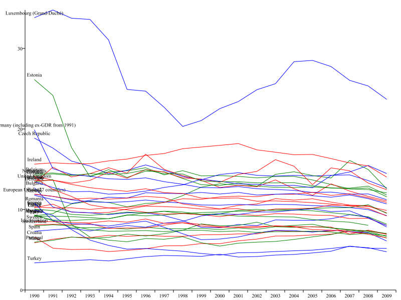

Overview
The following data is available under the original Eurostat license:
- http://eurostat.linked-statistics.org/data/ contains the observations
- http://eurostat.linked-statistics.org/dsd/ contains the Data Structure Definition (DSD)
- http://eurostat.linked-statistics.org/dic/ contains the dictionaries
Via our SPARQL endpoint you can query the entire metadata including DSDs and dictionaries.
We pull in changes from the original Eurostat dataset on weekly basis and our conversion process runs every Saturday at noon taking into account new datasets along with updates to existing datasets. Subscribe to the mailing list in order to receive a weekly email which lists the datasets that has been updated or newly added.
Usage and Examples
The Eurostat data made available here covers a number of areas from economy over demographics to trade and transport data. You can use the data, for example, to learn about national statistics, explore an industrial area or compare agricultural data across regions. In the following we show you some exemplary (cross-dataset) SPARQL queries kindly provided by Søren Roug from the European Environment Agency (EEA).
Greenhouse gas emissions
The following example queries across two datasets and calculates combined values for greenhouse gas emissions per capita.
Note that executing this query will require a SPARQL endpoint configured to download files listed in the FROM clause.
PREFIX qb: <http://purl.org/linked-data/cube#>
PREFIX e: <http://ontologycentral.com/2009/01/eurostat/ns#>
PREFIX sdmx-measure: <http://purl.org/linked-data/sdmx/2009/measure#>
PREFIX skos: <http://www.w3.org/2004/02/skos/core#>
PREFIX g: <http://eurostat.linked-statistics.org/ontologies/geographic.rdf#>
PREFIX dataset: <http://eurostat.linked-statistics.org/data/>
SELECT ?country ?year ?population ?ghgtotal xsd:decimal(?ghgtotal)*1000/(xsd:decimal(?population)) AS ?percapita
FROM <http://eurostat.linked-statistics.org/data/demo_pjanbroad.rdf>
FROM <http://eurostat.linked-statistics.org/data/env_air_gge.rdf>
FROM <http://semantic.eea.europa.eu/home/roug/eurostatdictionaries.rdf>
WHERE {
?popobs qb:dataset dataset:demo_pjanbroad ;
e:time ?uyear;
e:freq <http://eurostat.linked-statistics.org/dic/freq#A>;
e:age <http://eurostat.linked-statistics.org/dic/age#TOTAL>;
e:sex <http://eurostat.linked-statistics.org/dic/sex#T>;
e:geo ?ucountry;
sdmx-measure:obsValue ?population.
?ghgobs qb:dataset dataset:env_air_gge ;
e:geo ?ucountry;
e:time ?uyear;
e:airsect <http://eurostat.linked-statistics.org/dic/airsect#TOT_X_5>;
sdmx-measure:obsValue ?ghgtotal.
?ucountry skos:prefLabel ?country.
?uyear skos:prefLabel ?year
}
ORDER BY ?country ?year
The results of the above query displayed as a line chart looks like:
If you want to re-create the chart above, here are the resources that have been used:
National statistics for the Albacore fish
The SPARQL query below combines 24 different datasets providing national statistics for the Albacore fish with the goal to understand if further protection in the form of fishing quotas is necessary.
PREFIX qb: <http://purl.org/linked-data/cube#>
PREFIX e: <http://ontologycentral.com/2009/01/eurostat/ns#>
PREFIX sdmx-measure: <http://purl.org/linked-data/sdmx/2009/measure#>
PREFIX skos: <http://www.w3.org/2004/02/skos/core#>
PREFIX g: <http://eurostat.linked-statistics.org/ontologies/geographic.rdf#>
PREFIX dataset: <http://eurostat.linked-statistics.org/data/>
PREFIX eunis: <http://eunis.eea.europa.eu/rdf/species-schema.rdf#>
SELECT ?country ?year ?presentation ?landed ?unit
FROM <http://eurostat.linked-statistics.org/data/fish_ld_be.rdf>
FROM <http://eurostat.linked-statistics.org/data/fish_ld_bg.rdf>
FROM <http://eurostat.linked-statistics.org/data/fish_ld_cy.rdf>
FROM <http://eurostat.linked-statistics.org/data/fish_ld_de.rdf>
FROM <http://eurostat.linked-statistics.org/data/fish_ld_dk.rdf>
FROM <http://eurostat.linked-statistics.org/data/fish_ld_ee.rdf>
FROM <http://eurostat.linked-statistics.org/data/fish_ld_es.rdf>
FROM <http://eurostat.linked-statistics.org/data/fish_ld_fi.rdf>
FROM <http://eurostat.linked-statistics.org/data/fish_ld_fr.rdf>
FROM <http://eurostat.linked-statistics.org/data/fish_ld_gr.rdf>
FROM <http://eurostat.linked-statistics.org/data/fish_ld_ie.rdf>
FROM <http://eurostat.linked-statistics.org/data/fish_ld_is.rdf>
FROM <http://eurostat.linked-statistics.org/data/fish_ld_it.rdf>
FROM <http://eurostat.linked-statistics.org/data/fish_ld_lt.rdf>
FROM <http://eurostat.linked-statistics.org/data/fish_ld_lv.rdf>
FROM <http://eurostat.linked-statistics.org/data/fish_ld_mt.rdf>
FROM <http://eurostat.linked-statistics.org/data/fish_ld_nl.rdf>
FROM <http://eurostat.linked-statistics.org/data/fish_ld_no.rdf>
FROM <http://eurostat.linked-statistics.org/data/fish_ld_pl.rdf>
FROM <http://eurostat.linked-statistics.org/data/fish_ld_pt.rdf>
FROM <http://eurostat.linked-statistics.org/data/fish_ld_ro.rdf>
FROM <http://eurostat.linked-statistics.org/data/fish_ld_se.rdf>
FROM <http://eurostat.linked-statistics.org/data/fish_ld_si.rdf>
FROM <http://eurostat.linked-statistics.org/data/fish_ld_uk.rdf>
FROM <http://semantic.eea.europa.eu/home/roug/eurostatdictionaries.rdf>
WHERE {
?obsUri e:species <http://eurostat.linked-statistics.org/dic/species#ALB>;
e:pres <http://eurostat.linked-statistics.org/dic/pres#P00>, ?upresentation;
e:dest <http://eurostat.linked-statistics.org/dic/dest#D0>;
e:natvessr <http://eurostat.linked-statistics.org/dic/natvessr#TOTAL>;
e:unit <http://eurostat.linked-statistics.org/dic/unit#TPW>, ?uunit;
e:geo ?ucountry;
e:time ?uyear;
sdmx-measure:obsValue ?landed.
?ucountry skos:prefLabel ?country.
?uunit skos:prefLabel ?unit.
?uyear skos:prefLabel ?year.
?upresentation skos:prefLabel ?presentation.
}
ORDER BY ?country ?year ?presentation
The EEA provides exemplary queries along the line of the above query, see for example the Thunnus alalunga page.
For more example queries, please refer to the wiki page on GitHub.
Dataspace Build Process
Eurostat publishes more than 5200 datasets, which, when converted into RDF require more than 350GB of disk space yielding a dataspace with some 8 billion triples. In the following we provide a quick overview of the process of how we built the Eurostat - Linked Data dataspace. If you want to learn more about this process (including vocabularies and tools used) have a look at the LATC Report on the Publication of European Institutions Data.
Original Dataset
The original data comes from the Eurostat bulk download facility, allowing for downloading individual datasets or the complete database under a dedicated license. Eurostat publishes datasets chiefly in TSV, and the Statistical Data and Metadata eXchange (SDMX) format covering statistical data about:
- General and regional statistics
- Economy and finance
- Population and social conditions
- Industry, trade and services
- Agriculture and fisheries
- External trade
- Transport Environment and energy
- Science and technology
In addition, Eurostat publishes a Table of Contents containing a list of all data sets, which are available to download as well as a list of codelists used in the datasets.
Conversion, Interlinking and Publishing
We developed a set of tools for parsing the Eurostat ToC to retrieve a list of URLs and download the metadata about the dataset along with the dataset itself, triggered by a cron job.
The observations are modelled using the RDF DataCube vocabulary and made available as RDF/XML documents; for a concrete example, have a look at the Powdered Dairy Products dataset. Equally, the dataset metadata, containing definitions of concepts and dimensions is modelled using DataCube and made available as RDF/Turtle documents; a concrete example is available via the Powdered Dairy Products dataset’s metadata. Last but not least, the dictionaries (providing the definition of codes and available in English, German and French) are represented in SKOS concepts and made available as RDF/XML documents; an example is the geo dictionary.
Rather than hosting the entire 8 billion triples via the SPARQL endpoint we provide a VoID description that specify the location of a particular dataset on the file system. The VoID description, the codelists and the metadata about the datasets are available via the SPARQL endpoint (Apache Jena Fuseki).
Currently, we have interlinked the regional entities (countries and NUTS regions) through skos:exactMatch and skos:closeMatch links to a number of other datasets:
| Target | Links |
|---|---|
| DBpedia | 1635 |
| LinkedGeoData | 1559 |
| RAMON | 2048 |
| FU Berlin Eurostat | 425 |
| Eurostat Linked Data Wrapper | 4401 |
| Linked NUTS | 2068 |
| nuts.geovocab.org | 1927 |
Links were generated using a number of mechanisms, including the Silk Link Discovery Framework (see link specifications) and SPARQL CONSTRUCT against the source dataset (see queries).
Support & Development
The Eurostat RDF datasets adhere to Eurostat’s copyright policy.
Who is behind this
The Eurostat - Linked Data is developed and maintained by Linked Data Research Centre, DERI, NUI Galway, Ireland and has been initially funded by EC FP7 Support Action LOD Around The Clock (LATC). The team behind this work consists of:
- Aftab Iqbal (main contact)
- Sarven Capadisli
- Richard Cyganiak
- Michael Hausenblas
Reporting bugs and ideas
If you find a bug or have a suggestion for an enhancement, please use the issue tracker on GitHub, or let us know via email.